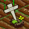
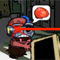
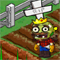
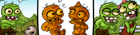
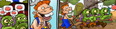
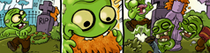

Zombie Farm
Latest News
Exciting new update has been approved!
- GAME CENTER SUPPORT
- LOCAL NOTIFICATIONS
- NEW ZOMBIE ABILITIES
- NEW QUESTS
- NEW DAILY BONUSES
Frequently Asked Questions
How do I save my game?
When you tap on the game menu (upper left button) you'll see a "Save Game" button, tap it to manually save your farm. Zombie Farm also saves your game automatically whenever you quit the app. It's also a good idea to do periodical backups of your device through iTunes.
I just started, can I have more than 6 patches of soil?
When you tap on the game menu (upper left button) you'll see a "Save Game" button, tap it to manually save your farm. Zombie Farm also saves your game automatically whenever you quit the app. It's also a good idea to do periodical backups of your device through iTunes.
How do I move stuff in my farm?
Zombies and soil patches can't be moved. Everything else like trees or decorations can be moved. Select the move tool (dark blue button), then tap on the thing you want to move. You will then be able to drag it around your farm. Once you find a suitable place for it, let go of the item you are dragging to place it.
How do I rotate stuff in my farm?
First select the rotate tool in the tool menu (light blue button). Most of the items on your farm can be rotated except for objects that you cannot move and certain items such as road intersections and balloons. When an item can't after you rotate it, you'll be able to move it to a new area in the same manner as the move tool.
How do I store an item from the farm?
When you reach level 8 you can buy your first storage building, the Shabby Shed. Once you have this building on your farm you can then store items. Tap an item on your farm, and in the blue button in the tool tip that appears. An informative window will appear which gives you the option to store the item!
How do I retrieve an item from storage?
You can access the storage menu two ways: You can either go to the tool menu and tap the storage button (brown button with a box) on the right panel. Or tap the storage building itself, and then tap the blue button that appears in it's tool tip.
What do I do with all these zombies on my farm?
Zombies love to just hang around the farm, but they're also important money makers. You need zombies to do invasions. If you win an invasion, you are rewarded with gold and occasionally a brain. You will need at least 8 zombies to invade, best to invade with 16 though.
How do I get brains?
There are four ways: First, through in-app purchase in the market menu. Second, winning an invasion will sometimes reward you with a brain along with the gold you plunder. Third, daily surprises from having friends will sometimes reward you with a brain instead of gold. Finally, you can get a brain by combining 100 brain fragments (visit the market once you earn over 100 fragments to get your brain).
What about those brain fragments?
Theres a "Get Brain Fragments" button under the Brains category of the market. When you tap on it, you'll be brought to a menu where you can see a list of apps and the corresponding amount of brain fragments you receive. Download any of the apps and open it. Then the next time you visit the market in Zombie Farm you should see your brain fragments total increase.
What's the deal with my hungry zombies?
Hungry zombies are great to bring to an invasion! The hungrier they are, the more eager they will be to fight. You will notice hungry zombies will have a faster moving combat bar during an invasion, and they don't get distracted as much. So it's actually good to starve your zombies.
How do I feed my zombies?
When zombies participate in an invasion, regardless if you win or lose, they will be well fed after the fight.
Will zombies die if i don't feed them?
Zombies can't die since they're already dead! Your zombies will never go away once you have them. You can only lose zombies in combat or by selling them.
How do I fight?
You are allowed to fight if you have 8 or more zombies. It's best to fight with 16. Once you have enough zombies, an "Invade" button will appear on the lower left. You can only invade every 2 hours.
What's this new window that pops up when I select an enemy to invade?
That's where you get to select the zombie fight order for the invasion. From there you can see all your zombies by sliding then menu. You determine their fight order by tapping the zombies in the order you want them to be deployed. Tapping "Pick For Me" will automatically set the order for you if you don't want to pick.
It says I won an item from a fight but where is it?
All items that drop from a fight go straight to your storage. Don't worry about not having enough space or even a storage building, as it'll still go in there.
I won a rusty fragment but what is it?
Try to collect more of them and then tap on it in the storage menu, you might get something good.
Why do my crops wilt so fast?
Fast crops like carrots and mini zombies will wilt within 1 hour once they're ripe. If you find your crops wilting too fast, try plant crops that take longer to grow.
How long does it take a crop to wilt?
A crop will stay ripe for 3 times its growth period. For example Tomatoes grow in 4 hours. Once a tomato is ripe, it will take an additional 12 hours for it to wilt.
Do zombies wilt too?
They sure do.
What does fertilizing do?
Fertilizing doubles the gold value of a crop when harvested. Also, fertilized zombies will never be lifeless when you harvest them. Fertilizing is automatically done by Garden Zombies, Zombotanists, Flower Zombies, and Zombees. Each has a chance to fertilize crops. The more of these zombies you have on your farm, the better chances your crops will be fertilized.
What is "Life Force"?
Keeping a high Life Force lessens the chance of harvesting lifeless zombies. It also affects the success of zombie mutations. Trees give the most life force per square tile.
How do I know how much "Life Force" I have?
Tap on any decorative item, like a tree or a fence to see how high your Life Force is.
What are Zombie Mutations?
Once you have a type of mutation unlocked from the market menu, try planting a zombie next to a crop. When it's time to harvest the Zombie, you just might end up with a mutant. For example, if you have the Onion mutation unlocked, plant your zombies right next to the onions. It won't matter if the onion is not fully grown. Remember to harvest the zombie before harvesting the crop.
What good are Mutant Zombies?
Besides looking funny, mutants are better in combat than regular zombies. Check the Market for details on each mutation.
What the heck are Combined Zombies?
Combined zombies are made by combining two zombies to get a much stronger zombie! If you combine any two zombies of the same type, you'll get a combined zombie of that type. Combine two zombies of different types and you'll have a 50% chance to get one or the other.
Well that sounds great but how do i actually combine?
It's easy! Just buy a Zombie Pot in the market (available at lvl25) then place it on your farm. If you have 2 or more zombies available, tap on the pot and you'll be prompted to select 2 zombies on your farm. Tap on the 2 zombies, you'll then be asked if you want to combine those 2 zombies. It currently takes one hour to cook up a combined zombie.
Does color matter for Combined Zombies?
Color doesn't matter so feel free to come up with any color combination you can think of!
How about mutations when combining?
If both of the zombies have the same mutation, the combined zombie will have a 100% of getting that mutation. However if only one zombie has a mutation there's a small chance that the combined zombie won't get it.
How do I see zombie stats?
Tap on a zombie, and you should see a blue button next to it's name. Tapping it will take you to the zombie menu, where you can see all your zombie stats. You can also tap the zombie menu button (brown button with RIP) to bring up the zombie menu.
What's a zombie veteran?
Zombies earn veteran rank once they survive an invasion. Once they've increased their veteran rank four times your zombies will reach master rank. Each rank gives your zombies a 5% boost to all their stats, so try not to lose any zombies!
What about that zombie ability tab?
That's just one of the many cool features we're planning for future updates so remember keep playing Zombie Farm and follow us on facebook and Twitter!
What is a Zombie Patch?
If you feel your zombies are a bit unruly running about your farm, try using a Zombie Patch. Zombies love to snooze on these patches. You can wake them or make them sleep by tapping on the patch.
What is a Zombie Camera?
Zombie camera just stays on your farm and takes pictures when you tap on him. Tap on the zombie camera and he'll take a quick snapshot of whatever your view is on the device. After taking the picture, you'll be given the option to send it to an e-mail address or to post it on your Facebook page (internet connection required). The pictures are better than free because zombie camera actually pays you for each picture!
Will I still get experience points from plowing if I buy a Plowing Monolith?
No. But planting will now give you double experience.
What's good about having friends?
The more friends you have the better your daily surprises will be.
How do I get friends?
If any of your Facebook friends use or have used Zombie Farm, he/she automatically becomes your friend in Zombie Farm. It's pretty simple!
What are daily surprises?
Every 24 hours, you get a random bonus. It could be gold, brains or sometimes an extra zombie.
Will there be more items in the market?
Yes, we periodically will come up with updates which will include new additions to the market.
I bought/planted too much stuff, now my farmer is broke!
You can always sell what you have to make back some gold. Zombies sell especially high. You can also trade brains for gold in the market if you have any. If you have absolutely no way to get gold back, you can always delete your save to start over through the options menu.
Zombie Farm is good! I want to tell you how much I like it
That's great! Don't forget to rate us in the app store to let other people know how much you like it. You can also like us on facebook and post in our discussion board.
Something broke on Zombie Farm! Now I am sad ... =(
Don't be sad! Go to our Zombie Farm discussion board on facebook and tell us all your Zombie Farm woes.
Wouldn't it be cool if Zombie Farm had ...
Whoa hold on there! Go to our facebook page first and check out our discussion board to tell us about it. You can join one of the many suggestion threads or start your own. We do read the boards regularly.
Can you tell me a zombie joke?
hmmm... What does a zombie love to wear? A Braincoat!
If after all that you still want or need to talk to us please feel free to get in touch through our community links - Facebook - Twitter - Playhaven
« Back to Home Page
Screenshots
  {kind=link}
{kind=link}
{kind=link}
{kind=link}
{kind=link}
{kind=link}
Comics
  {kind=link}
{kind=link}
{kind=link}
Reviews
“Zombie Farm is fun, colorful, and engaging enough to keep your interest longer than the majority of free iPhone games being sucked out of the iTunes' App Store”
www.ismashphone.com“Like microwavable Tex-Mex, Zombie Farm fuses two populist mainstays into a totally indulgent quick fix. The daily crop management of Farmville meets the zombie invasions of Plants vs. Zombies. Except in this case, you raise both the plants and the zombies, and you are attacking other people for gold and brains.”
www.gamezebo.comCommunity
We are all around the web and ready to chat with you, get in touch through any of the below routes
buy it now from the iphone app store buy it now from the iphone app store buy it now from the iphone app store